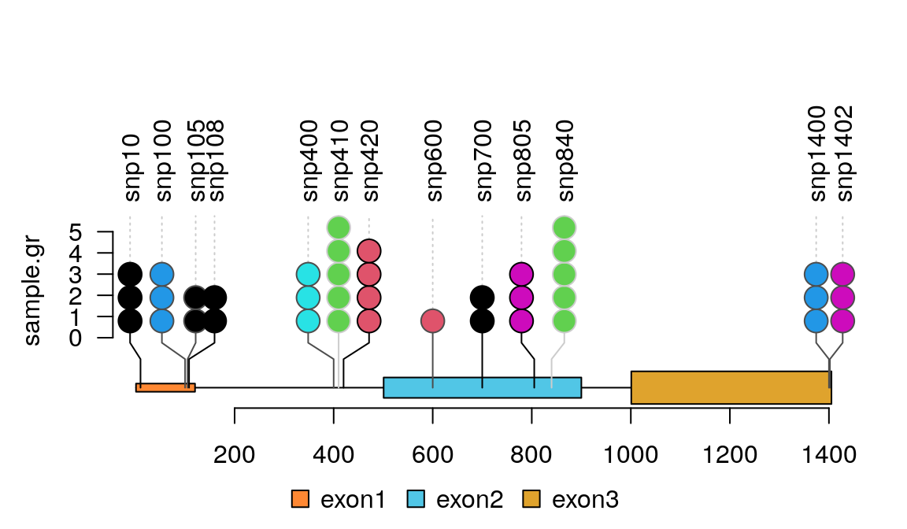

It is a routine way to show the distribution of mutation for genetic variations by lollipop-style (or needle-style) plot in a genome browser, along with a variety of genomic annotations, such as gene level or exon level models, CpG island, and so on. To show the SNP status or methylation data, a special plot, called lollipop plot or needle plot, is used to show the distribution along annotations. Many of currently available tools offline or online provide lollipop-like plot to show the mutation data such as cBioPortal Tools::MutationMapper1, EMBL-EBI::Pfam2, and BioJS::muts-needle-plot3, BiQ Analyzer4, and Methylation plotter5. The cBioPortal Tools::MutationMapper is a well-known and easy to use on-line genome browser that can output high quality of figures with mutations by input tab-delimited mutation data. In R/Bioconductor, there are options to use the flexibility of the Rgraphics system to display Methylation data such as MethVisual6, REDseq7, and GenVisR8.
Table 1: Tools availble for lollipop plot.
| software | inputs | online | description |
|---|---|---|---|
| MutationMapper1 | tab-delimited text | Yes | interprets mutations with different heights along protein annotations in automatic color theme |
| Pfam2 | JSON | Yes | could combine different line and head colors with different drawing styles |
| muts-needle-plot3 | JSON | No | plots data point with different colors, heights, and size along annotations, and highlighted selcted coordinates |
| BiQ Analyzer4 | BiQ methylation file | Yes | interprets methylation status in black & white |
| Methylation plotter5 | tab-delimited text | Yes | stacked multiple methylation status for multiple samples |
| MethVisual6 | R list | No | visualize the methylation status of CpGs according to their genomic position |
| REDseq7 | R list | No | plot frequencies of methylations and SNPs along a chromosome |
| GenVisR8 | R dataframe | No | plot most accurate graphic representation of the ensembl annotation version based on biomart service |
All the tools available for the genomic data visualization mentioned above can meet the basic even complicated requirement. However, if there are multiple mutations in almost same position, it is very difficult to display the data using any available tools. What’s more there is a tendency that the figures it generated become more and more complex and busy. Thereby make it difficult in generating high quality pictures for publication in bunch. To fill this gap, we developed trackViewer, a R/Bioconductor package as an enhanced light-weight genome viewer for visualizing various types of high-throughput sequencing data, side by side or stacked with multiple annotation tracks. Besides the regular read coverage tracks supported by existing genome browsers/viewers, trackViewer can also be used to generate lollipop plot to depict the methylation and SNP/mutation status, together with coverage data and annotation tracks to facilitate integrated analysis of multi-omics data. In addition, figures generated by trackViewer are interactive, i.e., the feel-and-look such as the layout, the color scheme and the order of tracks can be easily customized by the users. Furthermore, trackViewer can be easily integrated into standard analysis pipeline for various high-throughput sequencing dataset such as ChIP-seq, RNA-seq, methylation-seq or DNA-seq. The images produced by trackViewer are highly customizable including labels, symbols, colors and size. Here, we illustrate its utilities and capabilities in deriving biological insights from multi-omics dataset from GEO/Encode.
BiocManager is used to install the released version of trackViewer.
To install the development version of trackViewer, please try
To check the current version of trackViewer, please try
packageVersion("trackViewer")
## [1] '1.25.1'The input data for lollipop plot by trackViewer is an object of GenomicRanges::GRanges.
## load library library(trackViewer) set.seed(123) ## set seed for random sampling to make sure it can be repeat. ## Here we use SNP sample data SNP <- c(10, 100, 105, 108, 400, 410, 420, 600, 700, 805, 840, 1400, 1402) ## use GenomicRanges::GRanges function to create a GRanges object. ## for real data, users can import vcf data via VariantAnnotation::readVcf function. sample.gr <- GRanges("chr1", IRanges(SNP, width=1, ## the name of GRanges object will be used as label names=paste0("snp", SNP)), ## score value will be used to for the height of lollipop score = sample.int(5, length(SNP), replace = TRUE), ## set the color for lollipop node. color = sample.int(6, length(SNP), replace = TRUE), ## set the lollipop stem color border = sample(c("black", "gray80", "gray30"), length(SNP), replace=TRUE) )
The gene/protein model for lollipop plot by trackViewer is also an object of GenomicRanges::GRanges.
The clustered events could be visualized one by one by jittered lollipop positions.
lolliplot(sample.gr, features.gr)

VCF is a text file format that contains metadata and mutation information about genomic positions, original genotypes and optional genotypes. The trackViewer package could show single nucleotide polymorphisms (SNPs) from VCF file in lollipop-style plot. Figure @ref(fig:plotVCFdata) shows an example lollipop plot of real SNPs. Sample SNPs are a subset of 1000 variants and 50 samples from chromosome 22 taken from 1000 Genomes in VCF in the VariantAnnotation package. Different colors depict the new SNP events in the circles. The number of circles indicates the number of SNP events.
library(VariantAnnotation) ## load package for reading vcf file library(TxDb.Hsapiens.UCSC.hg19.knownGene) ## load package for gene model library(org.Hs.eg.db) ## load package for gene name library(rtracklayer) fl <- system.file("extdata", "chr22.vcf.gz", package="VariantAnnotation") ## set the track range gr <- GRanges("22", IRanges(50968014, 50970514, names="TYMP")) ## read in vcf file tab <- TabixFile(fl) vcf <- readVcf(fl, "hg19", param=gr) ## get GRanges from VCF object mutation.frequency <- rowRanges(vcf) ## keep the metadata mcols(mutation.frequency) <- cbind(mcols(mutation.frequency), VariantAnnotation::info(vcf)) ## set colors mutation.frequency$border <- "gray30" mutation.frequency$color <- ifelse(grepl("^rs", names(mutation.frequency)), "lightcyan", "lavender") ## plot Global Allele Frequency based on AC/AN mutation.frequency$score <- round(mutation.frequency$AF*100) ## change the SNPs label rotation angle mutation.frequency$label.parameter.rot <- 45 ## keep sequence level style same seqlevelsStyle(gr) <- seqlevelsStyle(mutation.frequency) <- "UCSC" seqlevels(mutation.frequency) <- "chr22" ## extract transcripts in the range trs <- geneModelFromTxdb(TxDb.Hsapiens.UCSC.hg19.knownGene, org.Hs.eg.db, gr=gr) ## subset the features to show the interested transcripts only features <- c(range(trs[[1]]$dat), range(trs[[5]]$dat)) ## define the feature labels names(features) <- c(trs[[1]]$name, trs[[5]]$name) ## define the feature colors features$fill <- c("lightblue", "mistyrose") ## define the feature heights features$height <- c(.02, .04) ## set the legends legends <- list(labels=c("known", "unkown"), fill=c("lightcyan", "lavender"), color=c("gray80", "gray80")) ## lollipop plot lolliplot(mutation.frequency, features, ranges=gr, type="circle", legend=legends)
lollipop plot for VCF data
Any data can imported into a GRanges object can be viewed by trackViewer package. Sample methylations are random data generated for illustration and saved in bed format file. The rtracklayer package is used to import the methylation data into a GRanges. The transcripts are extracted from TxDb object and assigned gene symbol with org database. Here also show multiple transcripts could be shown in different colors and tracks.
library(TxDb.Hsapiens.UCSC.hg19.knownGene) ## load package for gene model library(org.Hs.eg.db) ## load package for gene name library(rtracklayer) ## set the track range gr <- GRanges("chr22", IRanges(50968014, 50970514, names="TYMP")) ## extract transcripts in the range trs <- geneModelFromTxdb(TxDb.Hsapiens.UCSC.hg19.knownGene, org.Hs.eg.db, gr=gr) ## subset the features to show the interested transcripts only features <- GRangesList(trs[[1]]$dat, trs[[5]]$dat, trs[[6]]$dat) flen <- elementNROWS(features) features <- unlist(features) ## define the feature track layers features$featureLayerID <- rep(1:2, c(sum(flen[-3]), flen[3])) ## define the feature labels names(features) <- features$symbol ## define the feature colors features$fill <- rep(c("lightblue", "mistyrose", "mistyrose"), flen) ## define the feature heights features$height <- ifelse(features$feature=="CDS", .04, .02) ## import methylation data from a bed file methy <- import(system.file("extdata", "methy.bed", package="trackViewer"), "BED") ## subset the data to simplify information methy <- methy[methy$score > 20] ## for pie plot, there are must be at least two numeric columns methy$score2 <- max(methy$score) - methy$score ## set the legends legends <- list(labels=c("methylated", "unmethylated"), fill=c("white", "lightblue"), color=c("black", "black")) ## lollipop plot, pie layout lolliplot(methy, features, ranges=gr, type="pie", legend=legends)
lollipop plot, pie layout
The percentage of methylation rates are shown by pie graph in different layers for different patients.
## simulate multiple patients rand.id <- sample.int(length(methy), 3*length(methy), replace=TRUE) rand.id <- sort(rand.id) methy.mul.patient <- methy[rand.id] ## pie.stack require metadata "stack.factor", and the metadata can not be ## stack.factor.order or stack.factor.first len.max <- max(table(rand.id)) stack.factors <- paste0("patient", formatC(1:len.max, width=nchar(as.character(len.max)), flag="0")) methy.mul.patient$stack.factor <- unlist(lapply(table(rand.id), sample, x=stack.factors)) methy.mul.patient$score <- sample.int(100, length(methy.mul.patient), replace=TRUE) ## for a pie plot, two or more numeric meta-columns are required. methy.mul.patient$score2 <- 100 - methy.mul.patient$score ## set different color set for different patient patient.color.set <- as.list(as.data.frame(rbind(rainbow(length(stack.factors)), "#FFFFFFFF"), stringsAsFactors=FALSE)) names(patient.color.set) <- stack.factors methy.mul.patient$color <- patient.color.set[methy.mul.patient$stack.factor] ## set the legends legends <- list(labels=stack.factors, col="gray80", fill=sapply(patient.color.set, `[`, 1)) ## lollipop plot lolliplot(methy.mul.patient, features, ranges=gr, type="pie.stack", legend=legends)
lollipop plot, pie.stack layout
The caterpillar layout can be used to side by side comparing two samples or to display dense data.
## use SNPsideID to set the layer of event sample.gr$SNPsideID <- sample(c("top", "bottom"), length(sample.gr), replace=TRUE) lolliplot(sample.gr, features.gr)
lollipop plot, caterpillar layout
Sometimes, there are as many as hundreds of SNPs or methylation status involved in one gene. Dandelion plot can be used to depict such dense SNPs or methylation. Please note that the height of the dandelion indicates the density of the events.
methy <- import(system.file("extdata", "methy.bed", package="trackViewer"), "BED") length(methy)
## [1] 38## set the color of dandelion leaves. methy$color <- 3 methy$border <- "gray" ## we suppose the total event are same (methy + unmethy) ## we rescale the methylation score by max value of the score m <- max(methy$score) methy$score <- methy$score/m # The area of the fan indicate the percentage of methylation or rate of mutation. dandelion.plot(methy, features, ranges=gr, type="fan")
dandelion plot
1. Gao, J. et al. Integrative analysis of complex cancer genomics and clinical profiles using the cBioPortal. Science signaling 6, pl1 (2013).
2. Finn, R. D. et al. Pfam: Clans, web tools and services. Nucleic acids research 34, D247–D251 (2006).
3. Schroeder, M. P. Muts-needle-plot: Mutations needle plot v0.8.0. (2015). doi:10.5281/zenodo.14561
4. Bock, C. et al. BiQ analyzer: Visualization and quality control for dna methylation data from bisulfite sequencing. Bioinformatics 21, 4067–4068 (2005).
5. Mallona, I., Dı́ez-Villanueva, A. & Peinado, M. A. Methylation plotter: A web tool for dynamic visualization of dna methylation data. Source code for biology and medicine 9, 1 (2014).
6. Zackay, A. & Steinhoff, C. MethVisual-visualization and exploratory statistical analysis of dna methylation profiles from bisulfite sequencing. BMC research notes 3, 337 (2010).
7. Zhu, L. & others. REDseq: A bioconductor package for analyzing high throughput sequencing data from restriction enzyme digestion.
8. Skidmore, Z. L. et al. GenVisR: Genomic visualizations in r. Bioinformatics btw325 (2016).